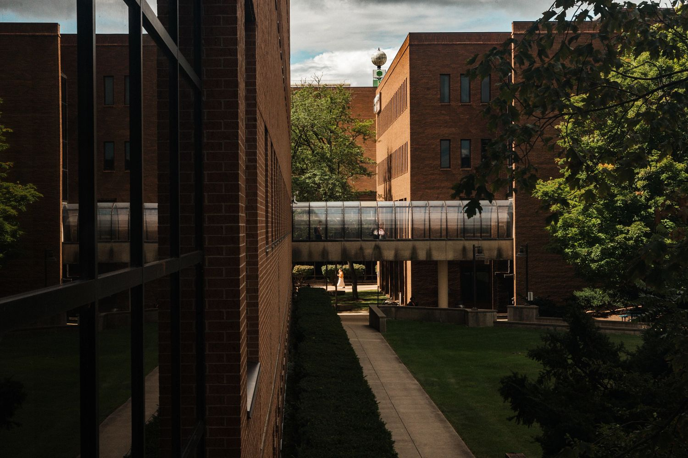
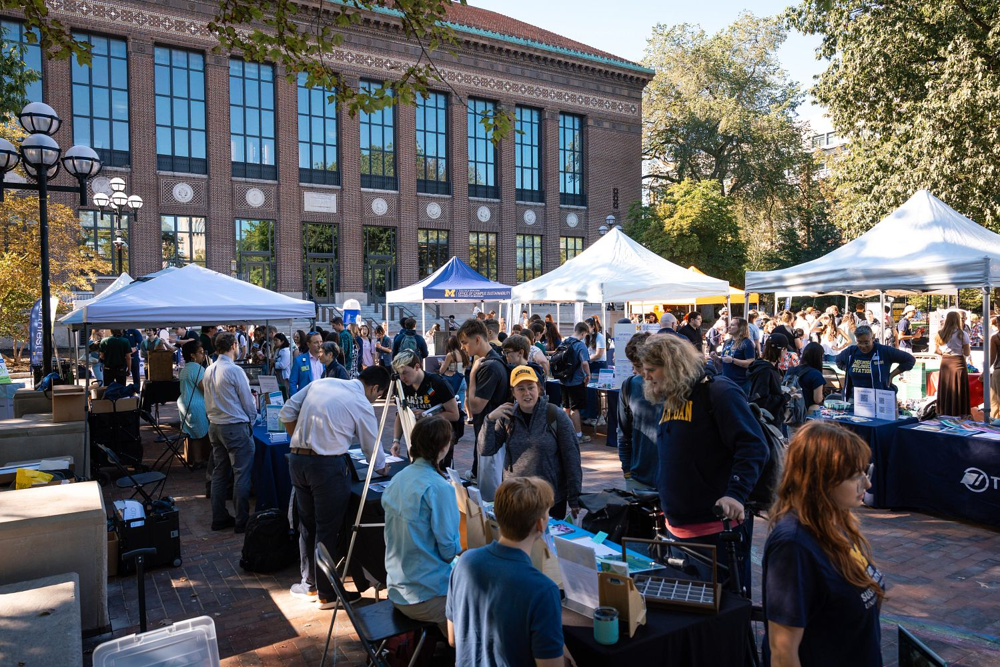
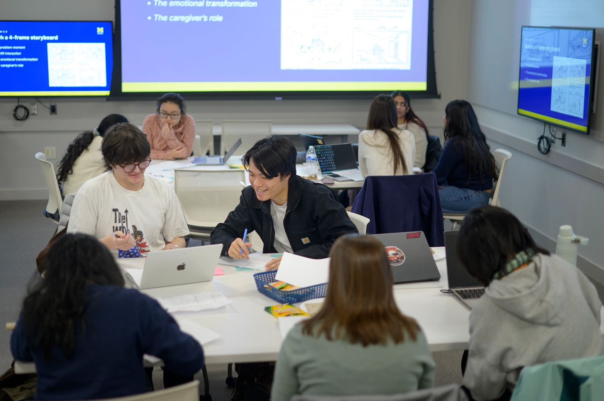

Building Your Professional Network
Networking is one of the most powerful tools for career development. Whether you're exploring career paths, seeking internships, or preparing for your first full-time role, building authentic professional connections opens doors to opportunities, insights, and mentorship. This page provides strategies for finding contacts, making meaningful connections, and maintaining relationships that will support your career journey at UMSI and beyond.

Don't overlook your existing network. Friends, peers, faculty, supervisors, and mentors can all provide valuable connections and introductions. LinkedIn search is another powerful tool for finding professionals in specific companies, roles, or industries. Remember, your network extends beyond UMSI—leverage all your personal and professional relationships.
Crafting Effective Outreach Messages
Getting a response to your networking outreach requires thoughtful, personalized messaging. Keep your messages short and demonstrate that you respect the recipient's time. Establish a specific time frame—it's easier for someone to say yes to a 20-minute coffee chat in the next two weeks than an undefined commitment. Most importantly, personalize each message to convey your respect and value for them as an individual.
When writing your outreach email or LinkedIn message, start with context that connects you to the recipient. Clearly state what you're looking for and why you're reaching out to them specifically. Be flattering about why you chose to contact them, be concise, and make it easy to say yes by defining the timeline. Always say thank you. Remember that the average response rate to cold messages is around 20%, so don't get discouraged—each connection you make is valuable.
What NOT to Do
Avoid common networking mistakes that can hurt your chances of getting a response. Never ask for information that is readily available online—do your research first. Never send your resume in the first message; always ask for permission. Do not begin by asking for a referral; build the relationship first. And most importantly, never ask for a job directly. Networking is about building relationships and gathering insights, not making immediate asks.
Preparing for Conferences and Events
Professional conferences offer exceptional networking opportunities, but preparation is key to making the most of them. Before attending, research the speaker list, check the conference job board, and follow conference social media to see who is posting and engaging. Identify your "warm leads"—contacts who are motivated to talk with you, such as U-M or UMSI alumni. Prioritize your top employers and tailor your outreach with specific reasons for wanting to connect.
Consider reaching out to schedule brief chats beforehand using LinkedIn. Introduce yourself, explain why you're writing, and include specific details about common interests. Remember to focus your message on the conference context. Arriving early to events, wearing your nametag properly, and attending social gatherings will maximize your networking opportunities.
Developing Your Elevator Pitch
Your elevator pitch is a fast, engaging self-introduction designed to start conversations. It should be 6-8 sentences and take under 60 seconds to deliver verbally. A strong pitch includes an introduction, connection points, and a closing statement or ask. The key is to share information relevant to your listener, demonstrate your unique abilities and interests, show your passion, highlight your strengths, and express clear next steps for follow-up.
Practice your delivery to ensure you're not reading from a script. Modulate your voice inflection and pitch, maintain appropriate volume, and pause between thoughts. Demonstrate enthusiasm, employ persuasive language, and maintain appropriate body language—spend about two-thirds of the time making eye contact and use open body language. Your pitch should express what you have to offer and what you're aspiring to do.
Making Connections During Events
When you connect with someone at an event, start simply. Thank them for their time and ask small talk questions about the conference or relevant topics. Share something "buildable" about yourself—something they can ask follow-up questions about. Then transition to deeper questions using the TIARA method: Trends, Insights, Advice, Resources, and Assignments. This framework helps you ask meaningful questions about their typical workday, lessons they've learned, how you can succeed in the field, what resources to explore, and what next steps they recommend.

Following Up and Maintaining Connections

Follow-up is crucial to keeping connections alive. Send a thank you email within 24 hours of meeting someone, referencing specific topics you discussed and expressing gratitude for their time and insights. Connect on LinkedIn and stay visible by being active—like, comment on, and share relevant content. Don't let relationships die; reconnect periodically when it makes sense, such as when they're doing interesting work or when you notice a relevant job posting at their organization.
If someone asked you to take specific actions—applying for roles, sending materials, or following up on introductions—be sure to do so promptly. Building your professional network is about cultivating genuine relationships over time. Each connection you make has the potential to open doors, provide guidance, and support your career development journey.